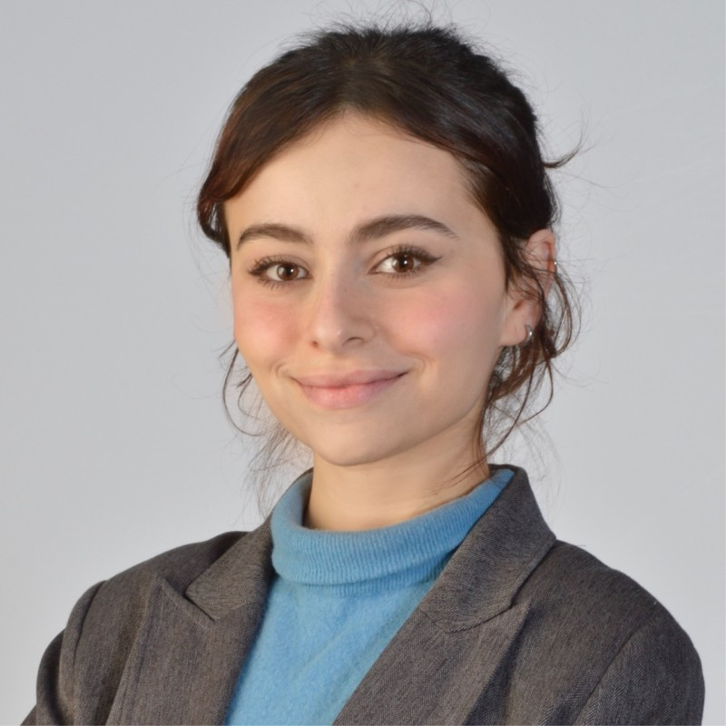

I work at the intersection of machine learning theory and generative modelling — focusing on discrete diffusion, planning, and robust evaluation of large language models.
Contact: lina.berrayana@epfl.ch • LinkedIn • GitHub
Selected Publications
Recent Experience
- Research Intern — Microsoft Research Beijing (2025)
- Research Intern — ETH Zurich / Prof. Thomas Hofmann (2025)
- ML Engineer Intern — IBM Research Zurich (2025)
About
I am a Master's student in Data Science at EPFL working on reasoning and planning with generative models. My work focuses on discrete diffusion models, collaboration between latent and autoregressive systems, and evaluation methods for robust and interpretable LLM behavior.
Quick links
- Homepage:
index.html(this page) - CV / photo:
cvpicture.jpg(if present) - Selected publications and preprints (below)
Selected publications
Recent experience (high level)
- Research Intern — Microsoft Research Beijing (2025): theoretical and applied work on masked discrete diffusion in planning frameworks.
- Research Intern — ETH Zurich (2025): collaboration between discrete diffusion and autoregressive models for reasoning tasks.
- Machine Learning Engineer Intern — IBM Research Zurich (2025): evaluation systems and agentic LLM reliability.
Other Activities
- Cultural exploration: I have lived in Europe (Switzerland, France), Africa (Tunisia), Asia (China, Japan), and America (United States during early childhood), which has broadened my perspective and appreciation for diverse cultures.
- Creativity: I enjoy making music and writing poetry — activities I find closely related to research: both require curiosity, experimentation, and iteration. In 2022 I released an EP with a French label RedPalm.
- Dance & sports: I practiced ballet for 8 years, developing discipline and focus, and I enjoy a variety of sports to maintain an active and balanced lifestyle.
- Challenges & hackathons: I love tackling challenges and have participated in multiple hackathons. At 15 I won my first hackathon at a startup competition hosted by EPT (the first university of Tunisia) as the youngest participant, and recently earned second prize in the Microsoft Switzerland Hackathon (2025).